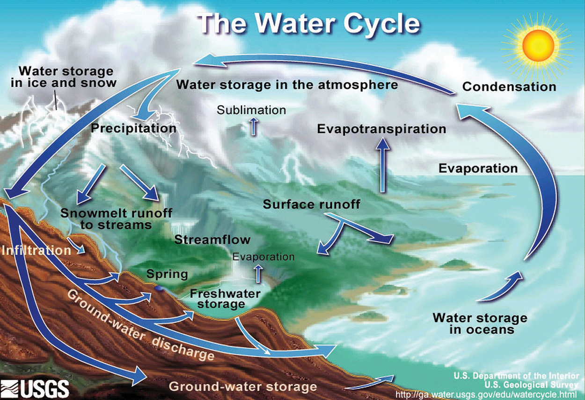

The earth has sustained a wide and abundant variety of life for millions and millions of years, with the origin of life on Earth estimated to have begun 3.5 billion years ago. Humans only arrived in the last 500,000 years, or 0.01 percent of the total history of life on the planet. The forms of life and the climate have changed continuously and sometimes drastically over that time. The earth’s history is divided into three geological eras, but the most recent and the one that we currently live in is the Cenozoic, which began 65.5 million years ago. The most significant features of the Cenozoic era are a long-term cooling of the earth, the rise and diversification of mammals, and the evolution of humans. Previous eras featured a much warmer planet, a different atmospheric system, and a wide variety of life.
Source: Wikimedia, http://commons.wikimedia.org/wiki/File:Geologic_time_scale.gif.
A significant feature of the climate over the last 2.6 million years has been “ice ages,Describes the climate system over the last 2.6 million years, featuring, in general, a cooling trend with variations between cold and warm periods.” which are a continuous fluctuation between relatively cold (glacial) and warm (interglacial) periods. Glaciations are periods of extremely cold climate where a greater portion of the earth is covered with ice and snow. Interglacials are intermittent warming periods between glaciations, which feature a melting and retreat of ice from large portions of Earth. In the last 800,000 years there have seen eight glacial cycles—one occurring about every 100,000 years—with the last glaciation ending about 12,500 years ago. Currently we are in an interglacial time period. This last interglacial period is known as the Holocene and features the rise of modern human civilization and the current climate and earth system.
The glacial cycles are the result of a complex interaction of factors, including atmospheric composition (such as the concentration of carbon dioxide and methane), variations in the earth’s orbit, movement of tectonic plates, and changes in solar output. Of the different factors, periodic changes in the earth’s orbit, tilt, and precession (wobbling around its axis) are believed to be a major driver for ice ages when they occur in a specific combination that reduce the amount of sunlight reaching the earth. These changes are also known as Milankovitch cycles, named after the Serbian mathematician who theorized that these orbital changes were the cause of the ice ages. It is important to understand natural past climate change in the context of man’s impact on global climate changeA warming trend in the last 150 years that is above normal patterns and attributed to man-made causes, including deforestation and combustion of fossil fuels., which will be discussed later on in this chapter.
Ecology is the study of life forms and their interaction and their relationship with the environment with a focus on how biological systems remain diverse, healthy, and productive. EcosystemsThe “web” or network of the interaction of living and nonliving factors in a specific geographic area. are the “webs” or complex patterns of interactions among a network of life in a specific place on Earth. Wetlands, forests, grasslands, coral reefs, and coastal estuaries are all examples of ecosystems. They are an interaction of living (biotic) and nonliving (abiotic) elements in a specific geographic area.
Healthy ecosystems are important to human society as they provide life-sustaining goods and services, including clean air to breathe, clean water to drink, plants and animals as food sources, and raw materials for clothing and shelter. The goods and services produced by natural systems that benefit humans are called ecosystem servicesThe suite of goods and services provided by natural systems that are vital to human livelihood.. These goods and services lack a formal market and are not included in traditional economic measures like GDP. They are often viewed as “public goods” or societal benefits.
Environmental changes can impact the life that an ecosystem can sustain. Severe or rapid changes can reduce the carrying capacity of an ecosystem and result in the loss of living organisms. Severe and permanent loss of animal species is called extinctionPermanent loss of a plant or animal species.. In the history of Earth there have been five major mass extinction events—meaning large number of species have died off dramatically: Ordovician (450 million years ago), Devonian (375 million years ago), Permian (251 million years ago), Triassic (205 million years ago), and Cretaceous (66 million years ago). The worst mass extinction is believed to be the Triassic extinction when over 90 percent of species on Earth died off. Evidence suggests that it can take millions of years for new species to recover after a mass extinction event.
In addition to these more well-defined mass extinction periods, there are many other extinction events that have occurred over the course of Earth’s history. Causes of past mass extinction have included dramatic changes in climate (warming or cooling), atmospheric changes, dramatic changes in sea level, changes in oxygen levels in the sea, and changes in land structure.
Currently, the Holocene extinctionWidespread extinction of animal species in the last ten thousand years due to human activities. is occurring. This is a widespread extinction that has been ongoing for approximately the last ten thousand years. It is estimated that currently up to 140,000 species are lost every year. The Holocene extinction is characterized by human-driven activities, including habitat loss, overpredation,Hunting of a species to an extent that it drives down its population putting it in danger of extinction. and, most recently, human-induced climate change. During the last century the rate of decrease in biodiversity has been increasing.“Biodiversity Loss Accelerating, UN Target Will Be Missed,” Environmental News Service, October 13, 2009, http://www.ens-newswire.com/ens/oct2009/2009-10-13-01.html.
Ross MacPhee and Clare Flemming of the department of mammalogy at the American Museum of Natural History researched mammal extinctions since 1500 AD. They identified ninety species of mammals that have become extinct during the modern era of European expansion. This is 2 percent of all mammal species on Earth. The natural rate of mammal species extinction is estimated to be one mammal species every 400 years, the loss of 90 species in 500 years is a 7,100 percent increase over the natural rate.Ross D. E. MacPhee and Clare Flemming, “Brown-Eyed, Milk-Giving…and Extinct: Losing Mammals Since A.D. 1500,” Natural History, April 1997. Example of animal species that have become extinct due to human activity include the dodo bird, Falkland Islands wolf, Atlas bear, eastern cougar, passenger pigeon, and the western black rhinoceros.
A basic understanding of the key resources that support the earth is essential for businesses that are concerned with sustainability. These resources support a healthy planet with rich and diverse plant and animal life. Sustainable businesses consider the impacts of their actions on these key resources.
The earth system has three primary sources that affect the flow of energy on Earth. They are solar, geothermal, and tidal. The sun (solar) is a powerful source of energy on Earth and life on Earth could not exist without it. Geothermal is the energy from within the earth and includes volcanoes and earthquakes. Tidal movement of the oceans is caused by the orbiting of the moon around the earth.
EnergyThe ability to do work. It flows from many different sources and is used by man to power modern society. is defined as the ability to do work. Work is defined as the application of a force over a distance. Energy can be divided into two broad categories: potential and kinetic. Potential energy is stored energy that has the potential to do work, such as the energy stored in a battery or fuel, while kinetic energy is energy in motion, such as waves crashing against a beach. Energy can be transferred from one form to another. Within the broad categories of potential and kinetic energy, energy can come in many different forms, including chemical, nuclear, mechanical, thermal, electrical, solar, and others.
The earth’s resources, which man uses to power modern society, are classified as either renewable or nonrenewable. Renewable energyEnergy produced by natural resources that are replaced relatively quickly. Renewable energy resources include biomass, hydro, geothermal, solar, wind, ocean thermal, wave action, and tidal action. In 2009, approximately 8 percent of all energy consumed in the United States was from renewable resources. refers to energy, including electricity, generated from sources that will not be depleted if used in a sustainable manner. Although the specific technologies that are considered renewable vary, they are generally considered to include solar, wind, geothermal, biomass, and hydro.
Table 2.1 Types of Renewable Energy
| Technology | Image | Description |
|---|---|---|
| Solar | http://en.wikipedia.org/wiki/File:Giant_photovoltaic_array.jpg | Electricity or thermal energy generated from the energy of the sun. |
| Wind | http://en.wikipedia.org/wiki/File:GreenMountainWindFarm_Fluvanna_2004.jpg | Energy generated from wind turning the blades of a wind turbine. |
| Geothermal | http://en.wikipedia.org/wiki/File:NesjavellirPowerPlant_edit2.jpg | Energy generated from thermal energy stored within the earth. |
| Biomass | http://commons.wikimedia.org/wiki/File:Biomass-fired_power_plant_(Guarda_Veneta).jpg | Energy generated from the combustion of biological sources, such as wood, landfill gas, or biomass fuels (e.g., ethanol). |
| Hydroelectric | http://en.wikipedia.org/wiki/File:ThreeGorgesDam-China2009.jpg | Energy generated from the gravitational force of water flowing. This is the most prevalent form of renewable energy in the world. |
Renewable energy resources provide an alternative to more prevalent means of electrical power generation, including coal, nuclear, natural gas, and oil. These sources of energy are nonrenewable and will be depleted at some point in the future.

Source: Wikimedia, http://commons.wikimedia.org/wiki/File:Nuclear.power.plant.Dukovany.jpg.
Nuclear energy is an energy source that has tremendous potential for increased global power generation as its fuel source is not fossil fuel based and does not involve combustion. This serves to provide a hedge against volatile fossil fuel prices and has the benefit of no air pollution emissions from power generation (including greenhouse gas emissions). It also is a technology that is capable of generating large amounts of energy. This has led some to claim that nuclear power is a viable clean energy technology for the future. However, this power source is not without issues.
Nuclear power involves hazardous, radioactive materials that can cause cancer and death with exposure. A history of infrequent, but damaging, power plant accidents has historically hampered investment in this technology in the United States. A nuclear meltdown occurred in 1979 at the Three Mile Island power plant in Pennsylvania, which resulted in the release of radioactive gases. In 1986, an explosion at the Chernobyl Nuclear Power Plant in Ukraine released large quantities of nuclear contamination into the atmosphere. And most recently, in 2011, a tidal wave damaged the Fukushima I Nuclear Power Plant resulting in the full meltdown of three nuclear reactors. All of these accidents have come with high economic costs for the damage and subsequent environmental remediation.
An example of how energy is transformed from one form to another can be seen in the operation of a car. It takes work to move a car down a road. The chemical potential energy stored in gasoline is transferred into thermal energy when the gasoline combusts in the car’s engine. The thermal energy released in the engine moves pistons in the engine transforming the thermal energy into mechanical energy. Through gears and other mechanical parts on the cars, the mechanical energy in the engine is transferred through the car resulting in the rotation of the tires, which move the car. The potential energy stored in the fuel is transformed into kinetic energy of the moving car.
A common measurement unit of energy is the British thermal unit (BTU)A commonly used measurement of energy. It is the amount of heat energy required to raise one pound of water by one degree Fahrenheit.. A BTU is the amount of heat energy required to increase the temperature of a pound of water by one degree Fahrenheit. A BTU is approximately equal to the amount of heat given off by burning a kitchen match. As a BTU is a relatively small unit, BTUs are often stated in larger units, therms or MMBTU. Therms or thermal units are equal to one hundred thousand BTUs. MMBTU is equal to one million BTUs. To help provide some context, a typical residential water heater has a heat output rating of about forty thousand BTU per hour. The average commercial boiler in the United States has an output ability of 9.6 MMBTU per hour.“Characterization of the U.S. Industrial Commercial Boiler Population,” Oak Ridge National Laboratory, http://www.cibo.org/pubs/industrialboilerpopulationanalysis.pdf.
In terms of electricity, the common unit of energy is the kilowatt hour or kWh. However, as the kilowatt hour is a unit of energy, electricity usage can also be expressed in terms of BTUs, with 1 kWh equal to 3412 BTUs. The units for energy used vary by country. For example, in the United States, engine power is related in terms of horsepower (HP) while in other countries it is rated in terms of kilowatts (kW). The 2012 Honda Civic’s engine is advertised as 140 HP in the United States and 103 kW in European countries. Both measures indicate the same amount of power.
Biodiversity is the result of 3.5 billion years of evolution. BiodiversityThe amount of variation of life within an ecosystem. is an indicator of the health of an ecosystem. Higher degrees of biodiversity imply greater ecosystem health. Biodiversity not only strengthens the overall health of the planet but also provides vital benefits to humans. Biodiversity is important in agriculture as it provides different varieties of plants and animals for human consumption. Biodiversity helps protect other natural resources, including water and soil. A significant portion of medicine is derived directly or indirectly from organic sources. Industry relies on biological inputs, such as timber, paper, and fiber. Biodiversity also provides leisure, cultural, and aesthetic value.
Why Is Biodiversity Important?
“At least 40 percent of the world’s economy and 80 percent of the needs of the poor are derived from biological resources. In addition, the richer the diversity of life, the greater the opportunity for medical discoveries, economic development, and adaptive responses to such new challenges as climate change.”“The DAC Guidelines: Integrating the Rio Conventions into Development Co-Operation,” OECD, Annex 2, 2002.
Source: Convention on Biological Diversity.
Plant and animal species have been disappearing at a rate at least fifty times greater than the natural rate, and this rate is predicted to rise as human activities continue to put demands on ecosystems. Based on current trends, an estimated 34,000 plant and 5,200 animal species face extinction. Agriculture biodiversity is under extreme pressure due to modern commercial agriculture, which has focused on a few specific species of plant and many farm animal breeds are at risk of extinction.“Sustaining Life on Earth,” Convention on Biological Diversity, http://www.cbd.int/convention/guide/?id=changing.
While the loss of individual species is of great concern, of even greater concern is the continued degradation and loss of some of the world’s richest ecosystems, including forests, wetlands, and coral reefs. These ecosystems are host to some of the greatest biodiversity on Earth and the loss of these ecosystems is the greatest threat to biodiversity.
The loss of biodiversity reduces the productivity of ecosystems. It weakens ecosystems and reduces their ability to be resilient to extreme natural events, such as floods, droughts, and human activity stresses. While the loss of species has always occurred as a natural phenomenon, the pace of extinction has accelerated dramatically as a result of human activity. This loss of life not only reduces the ecosystems goods and services available to the current generation of humans but also harms future generations as well.
Water covers more than 70 percent of the earth’s surface and is vital to all forms of life. Oceans hold 97 percent of surface waters, glaciers and the ice caps hold 2.4 percent, with lakes, rivers, and other land surface waters making up the remaining 0.6 percent. Water is a vital resource to humans as it is required as drinking water; it is an essential input for agriculture; and it provides for sanitation, transportation, energy generation, food processing, and power generation (through hydroelectric plants or dams). Increases in population and current water use practices are expected to increase water consumption in food production by up to 90 percent.“Agriculture at a Cross Roads: International Assessment of Agricultural Science and Technology for Development Global Report,” UNEP, http://www.agassessment.org/reports/IAASTD/EN/Agriculture%20at%20a%20Crossroads_Global%20Report%20(English).pdf.
Figure 2.3 Water Scarcity Map

Source: “Areas of Physical and Economic Water Scarcity,” UNEP, http://www.grida.no/graphicslib/detail/areas-of-physical-and-economic-water-scarcity_1570.
Currently, one in six people in the world lack safe drinking water, and water-related illness is the leading cause of human sickness and death. In 1989, there were 9,000 cubic meters of freshwater per capita available for human use. By 2000, this had dropped to 7,800 cubic meters, and it is expected to continue to decrease as human population increases.United Nations Educational, Scientific, and Cultural Organization (UNESCO), “The Makings of a Water Crisis: Can Supply Keep Up with Demand?” UNESCO Sources, no. 84 (1996): 12–13. Global per capita figures on water availability are somewhat misleading as the world’s available freshwater supply is not distributed evenly geographically, seasonally, or annually. Water distribution is dependent on Earth’s hydrological cycle. The movement of water is part of a natural cycle of evaporation into the atmosphere, precipitation, and then runoff across the land and into streams, rivers, and lakes. This cycle is powered by the sun, which serves to move clean water about the planet.
Figure 2.4 The Water Cyclehttp://ga.water.usgs.gov/edu/watercycle.html.
Source: The Water Cycle, US Geological Service.
Soil consists of layers of minerals that vary in characteristics across different geographic regions and ecosystems. Soil consists of both organic and inorganic components. Soil is a primary nutrient base for plants and therefore is important to humans for agriculture. Without soil, the earth would not support a rich base of plant and animal life, and it is an essential resource to consider in human interactions with the environment.